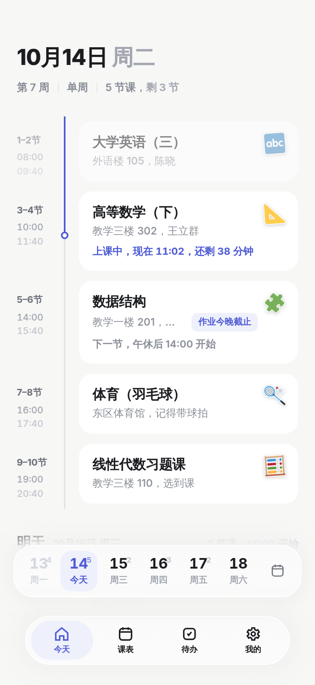
5 节课
已上 2 节
上课中
还剩 38 分钟
下一节
教学一楼 201
明天 2 节
10:00 开始
该出现的时候，才出现。
-
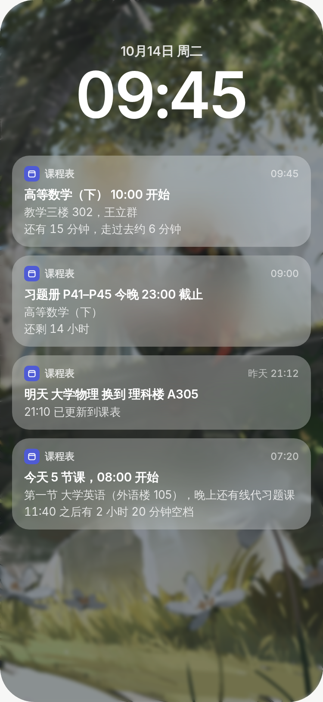
07:20
来自系统的提醒，了然于胸。
第一节几点、全天几节，醒来扫一眼便全知晓。课前 15 分钟，系统日历准时提醒，一次不落。
-
10:00
一次长按，尽在指尖。
静音、调课、换教室，或是翻阅往期记录。你需要的快捷选项，随指尖顺势展开。
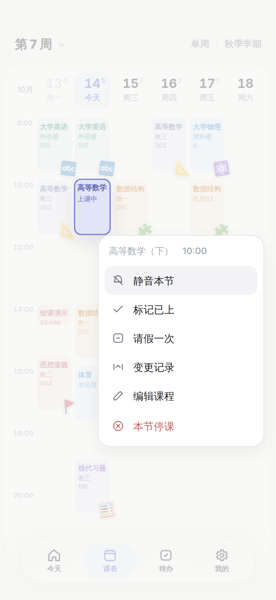
-
11:02
哪里变了，一目了然。
重新导入课表，时间、地点、新增课程的变动逐条明晰。而你精心打理的个性修改，系统自然懂得为你保留。
-
14:00
课程重叠，一目了然。
同一时段的两门课，同框并列呈现。去留由你决定，即便双双保留，提醒也互不干涉。
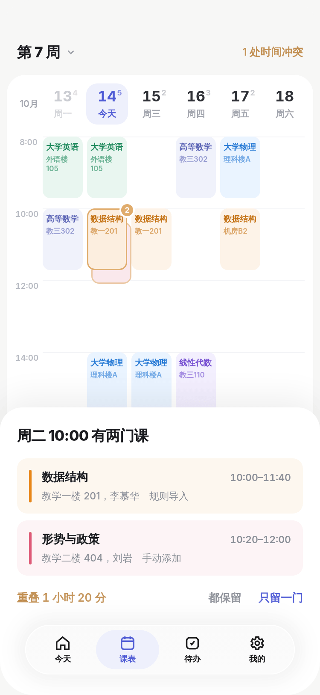
-
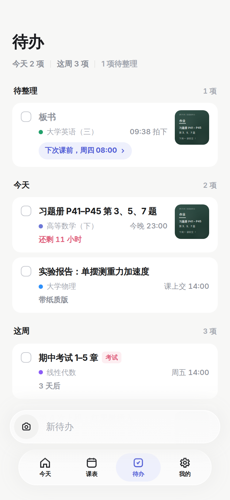
21:00
作业随课，件件有着落。
截止日期、提醒与完成状态，课程卡片里一眼看清。
-
全天
无需点开，一眼尽览。
下一节去哪、今天还有几节，四款小组件让安排常驻主屏幕。课表有变动，即刻同步刷新。
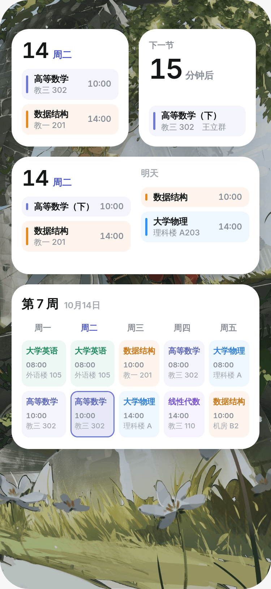
生在日历，
长在系统。
课表直接写入手机日历。不驻后台，不多耗一格电。手表、平板、车机，日历到哪，课表就到哪。
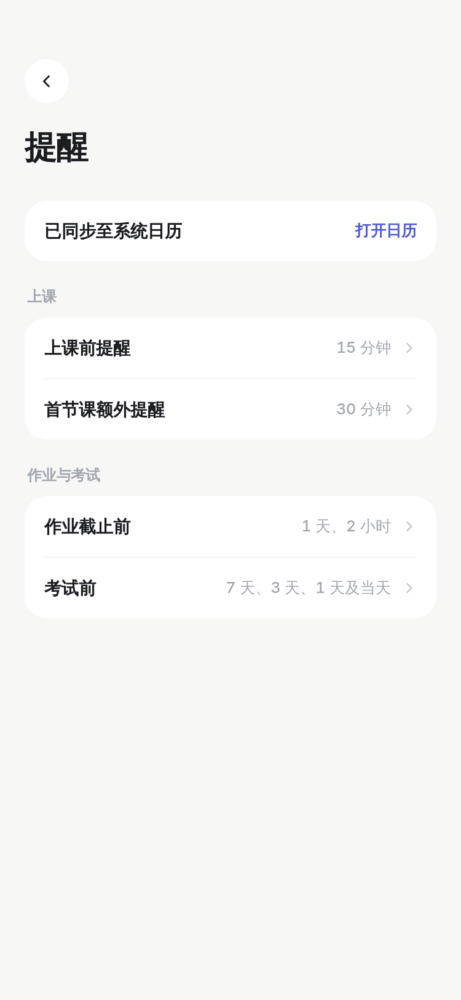
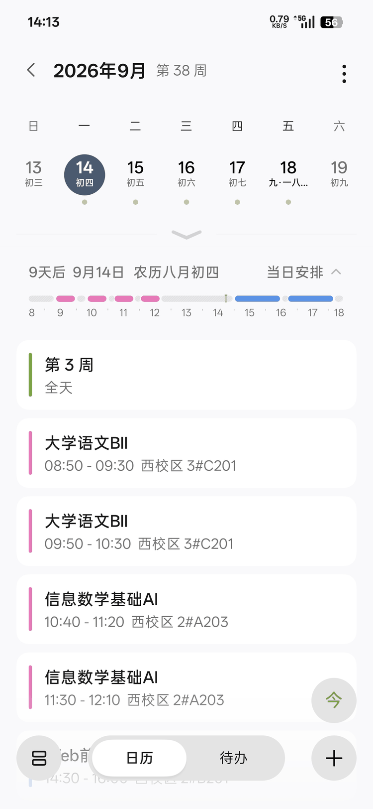
随手一拍，待办就绪。
-
刚下课
-
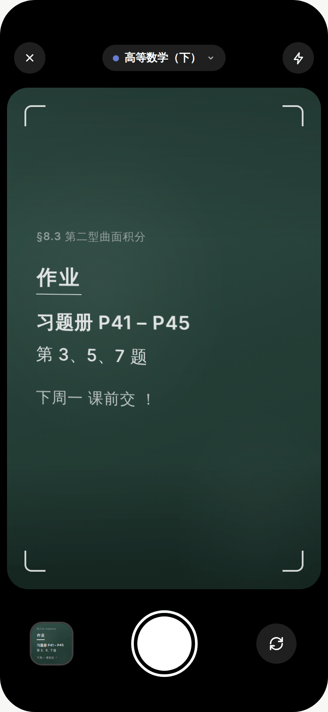
拍板书
-
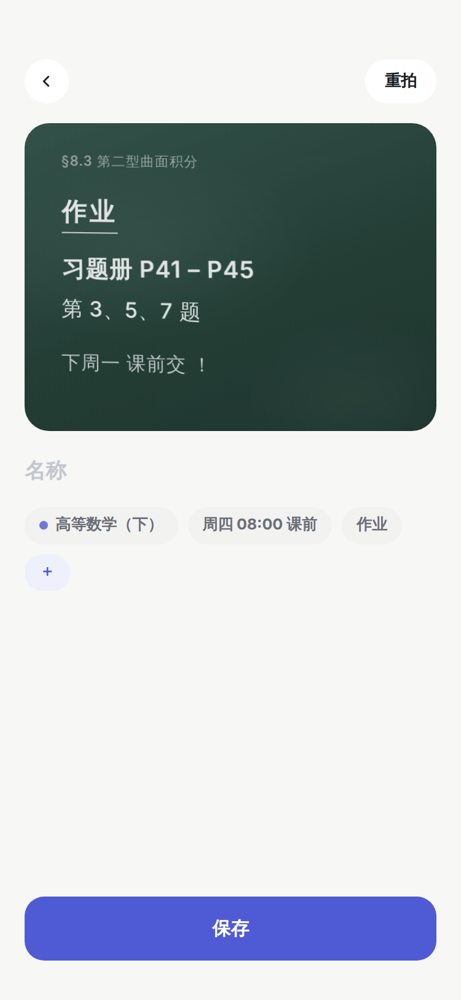
一瞬间
-
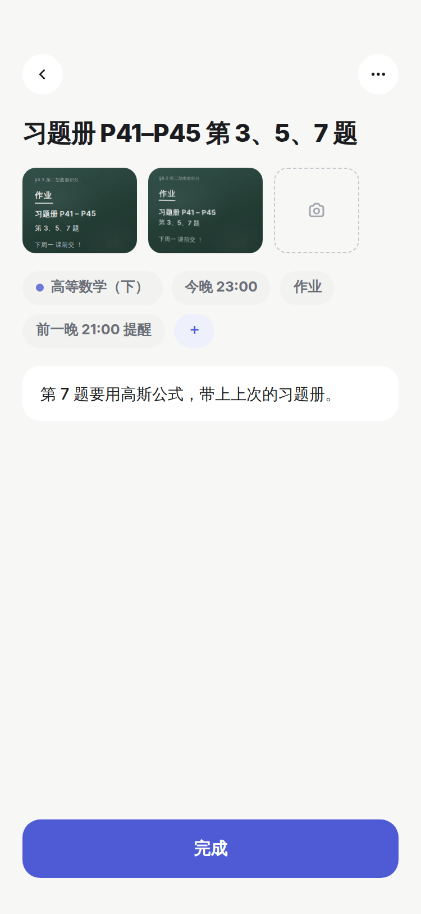
随课走
不论出处，轻松导入。
- 教务系统课表页面 HTML
- Excel.xlsx
- JSON.json
- 日历.ics
- CSV.csv
- AI 转换Prompt → JSON
- 手动添加逐门录入
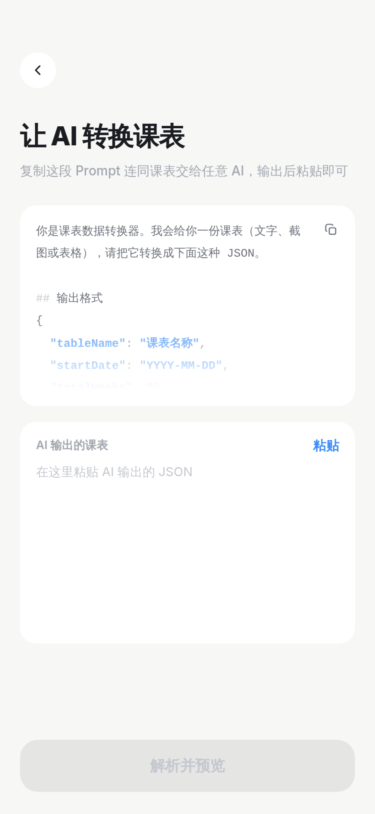
每一周，各有不同。
-
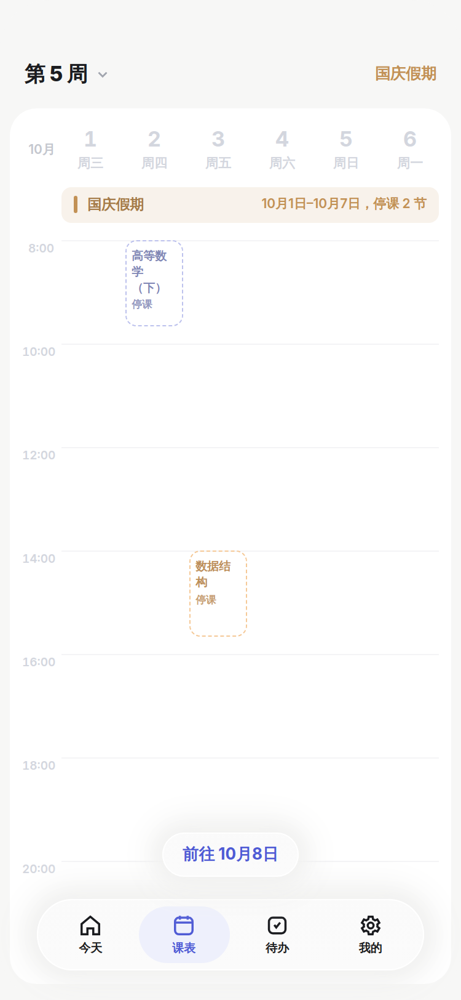
第 5 周假期
-
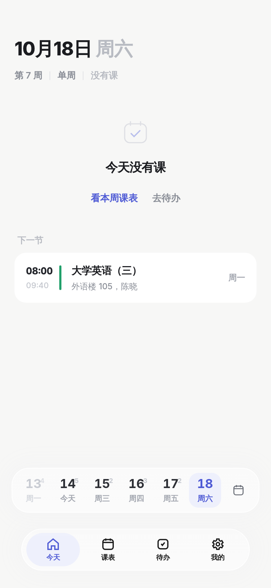
周六无课
-
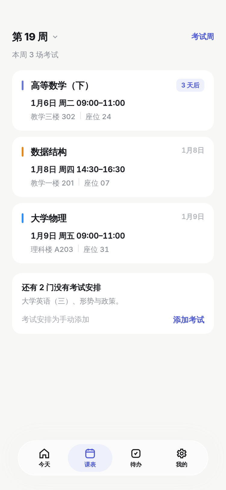
第 19 周考试周
-
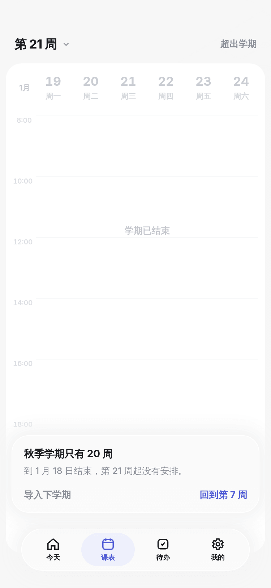
第 21 周学期外
是时候换个好课表了。
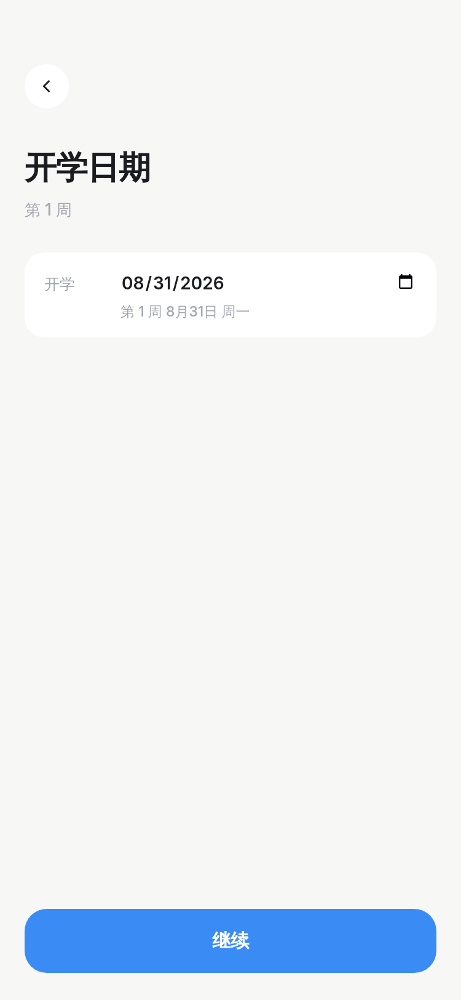
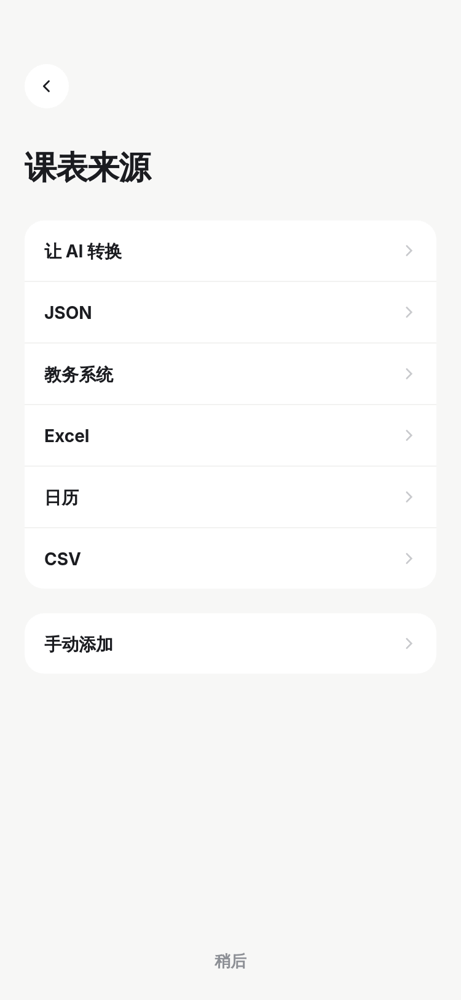